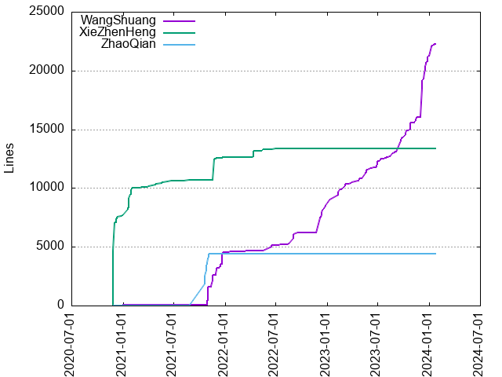
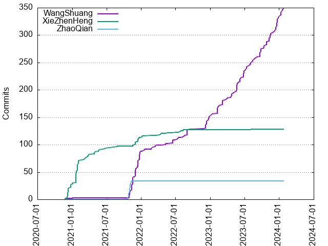

Authors
| Author | Commits (%) | + lines | - lines | First commit | Last commit | Age | Active days | # by commits |
|---|
| WangShuang | 348 (68.24%) | 22273 | 9933 | 2020-11-25 | 2024-01-23 | 1153 days, 21:58:33 | 148 | 1 |
| XieZhenHeng | 128 (25.10%) | 13372 | 3737 | 2020-11-25 | 2023-08-03 | 980 days, 21:11:57 | 57 | 2 |
| ZhaoQian | 34 (6.67%) | 4422 | 626 | 2021-10-21 | 2021-11-09 | 18 days, 18:35:38 | 14 | 3 |


| Month | Author | Commits (%) | Next top 5 | Number of authors |
|---|
| 2024-01 | WangShuang | 14 (100.00% of 14) | | 1 |
| 2023-12 | WangShuang | 30 (100.00% of 30) | | 1 |
| 2023-11 | WangShuang | 16 (100.00% of 16) | | 1 |
| 2023-10 | WangShuang | 13 (100.00% of 13) | | 1 |
| 2023-09 | WangShuang | 16 (100.00% of 16) | | 1 |
| 2023-08 | WangShuang | 12 (92.31% of 13) | XieZhenHeng | 2 |
| 2023-07 | WangShuang | 12 (100.00% of 12) | | 1 |
| 2023-06 | WangShuang | 21 (100.00% of 21) | | 1 |
| 2023-05 | WangShuang | 20 (100.00% of 20) | | 1 |
| 2023-04 | WangShuang | 9 (100.00% of 9) | | 1 |
| 2023-03 | WangShuang | 13 (100.00% of 13) | | 1 |
| 2023-02 | WangShuang | 16 (100.00% of 16) | | 1 |
| 2023-01 | WangShuang | 3 (100.00% of 3) | | 1 |
| 2022-12 | WangShuang | 24 (100.00% of 24) | | 1 |
| 2022-11 | WangShuang | 1 (100.00% of 1) | | 1 |
| 2022-09 | WangShuang | 11 (100.00% of 11) | | 1 |
| 2022-08 | WangShuang | 4 (66.67% of 6) | XieZhenHeng | 2 |
| 2022-07 | WangShuang | 4 (66.67% of 6) | XieZhenHeng | 2 |
| 2022-06 | WangShuang | 7 (87.50% of 8) | XieZhenHeng | 2 |
| 2022-05 | WangShuang | 3 (75.00% of 4) | XieZhenHeng | 2 |
| 2022-04 | XieZhenHeng | 4 (100.00% of 4) | | 1 |
| 2022-03 | WangShuang | 5 (100.00% of 5) | | 1 |
| 2022-02 | WangShuang | 2 (66.67% of 3) | XieZhenHeng | 2 |
| 2022-01 | WangShuang | 4 (57.14% of 7) | XieZhenHeng | 2 |
| 2021-12 | WangShuang | 39 (79.59% of 49) | XieZhenHeng | 2 |
| 2021-11 | WangShuang | 40 (59.70% of 67) | ZhaoQian, XieZhenHeng | 3 |
| 2021-10 | ZhaoQian | 13 (68.42% of 19) | WangShuang | 2 |
| 2021-08 | XieZhenHeng | 3 (100.00% of 3) | | 1 |
| 2021-06 | XieZhenHeng | 3 (100.00% of 3) | | 1 |
| 2021-05 | XieZhenHeng | 4 (100.00% of 4) | | 1 |
| 2021-04 | XieZhenHeng | 6 (100.00% of 6) | | 1 |
| 2021-03 | XieZhenHeng | 9 (100.00% of 9) | | 1 |
| 2021-02 | XieZhenHeng | 8 (100.00% of 8) | | 1 |
| 2021-01 | XieZhenHeng | 34 (100.00% of 34) | | 1 |
| 2020-12 | XieZhenHeng | 28 (93.33% of 30) | WangShuang | 2 |
| 2020-11 | XieZhenHeng | 2 (66.67% of 3) | WangShuang | 2 |
| Year | Author | Commits (%) | Next top 5 | Number of authors |
|---|
| 2024 | WangShuang | 14 (100.00% of 14) | | 1 |
| 2023 | WangShuang | 181 (99.45% of 182) | XieZhenHeng | 2 |
| 2022 | WangShuang | 65 (82.28% of 79) | XieZhenHeng | 2 |
| 2021 | WangShuang | 85 (42.08% of 202) | XieZhenHeng, ZhaoQian | 3 |
| 2020 | XieZhenHeng | 30 (90.91% of 33) | WangShuang | 2 |